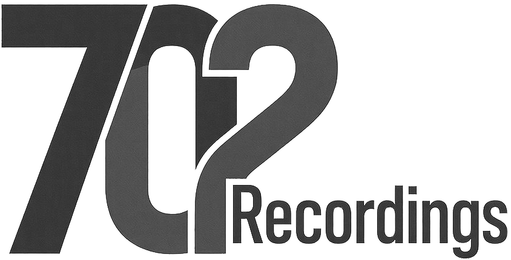

Recording
Piano, strings, voice and electronics, captured with care for room, space and silence.

Independent label and recording studio in Örebro, Sweden.
01 / About
702 Recordings is a boutique label for neoclassical and ambient music. We release a small number of records and give each one the time it needs. Founded in 2026 in Örebro, Sweden.
02 / Studio
Our studio is open to artists on the label and to independent musicians, composers and producers.
Piano, strings, voice and electronics, captured with care for room, space and silence.
Careful, transparent mastering that preserves the dynamics and detail of quiet music.
03 / People
04 / Contact
For demos, studio bookings and mastering enquiries, get in touch.
702recordings@gmail.com